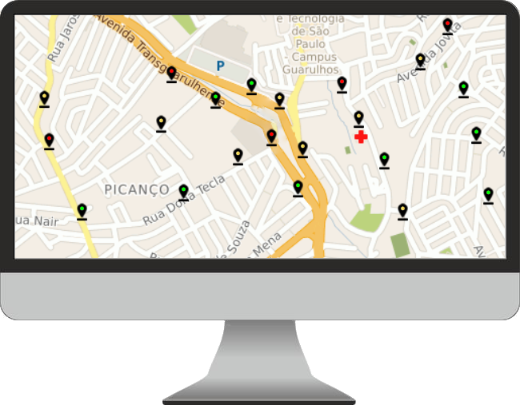

Pensado de forma a previnir ou diminuir o impacto de enchentes em São Paulo, em conjunto com nossos sensores, o nosso software analisa os dados vindo deles e informa como esta a situação de nivel e fluxo de agua em uma certa região e dando avisos para aqueles que moram na região e possuem contas no site

Conforme mostrado na imagem ilustrativa acima, vemos como seria uma tela para administradores e usuários, mostrando em pontos como está a situação dos sensores dentro do esgoto, sendo verde onde o fluxo e altura de água em níveis padrões, amarelo para uma situação pior, onde existe o risco de alagamentos e vermelho quando existe uma enchente iminente
a diferença entre o aplicativo de administradores e de usuários são os dados exibidos, enquanto o usuário pode apenas saber da situação, o administrador terá mais detalhes sobre valores do fluxo e nível da água e poderá agir antecipadamente caso perceba possíveis anormalidades nos valores